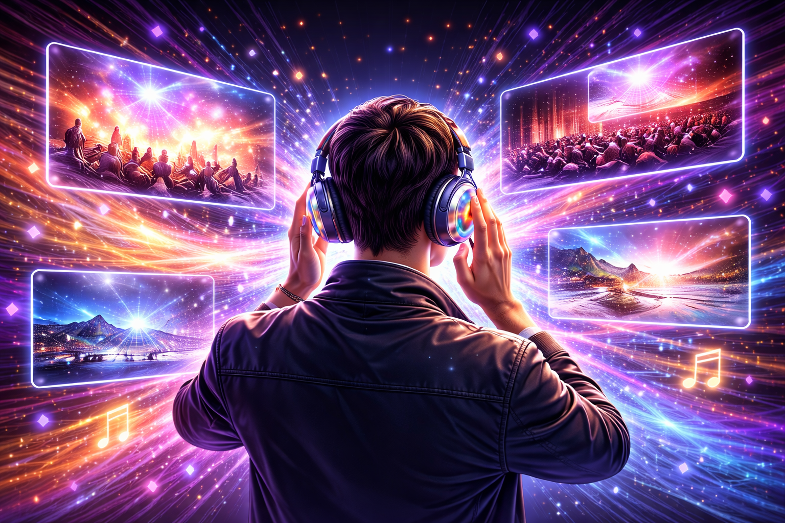
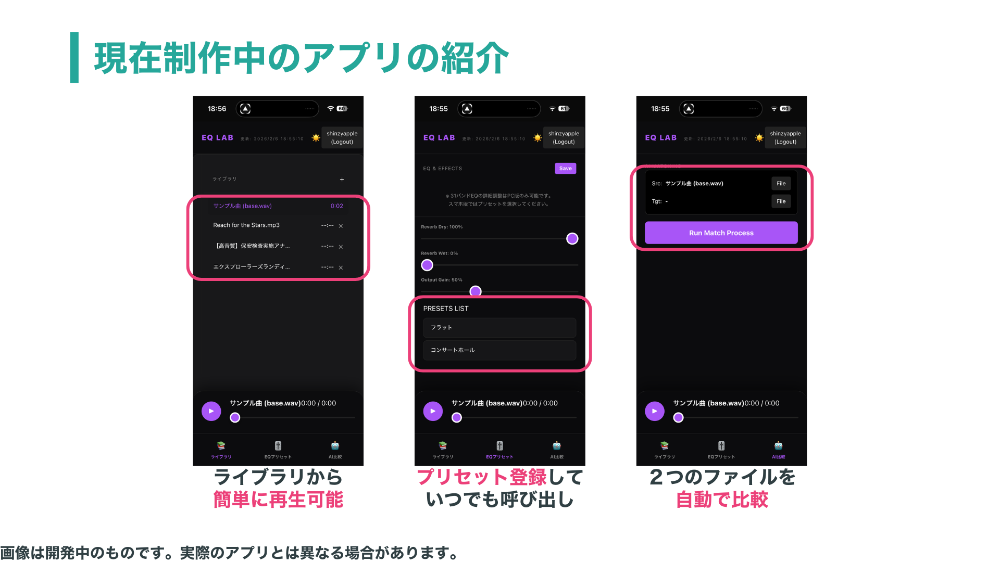

「耳で見る」体験。
アーティストのライブや映画を見た帰り道。スマホでその曲を聴き返すと、楽しかった記憶や印象的なシーンが、頭の中に鮮明に「見えてくる」ことがあります。
しかし、そこで聴いている音は、全ての音が近く感じる「音源」であり、「そこにいる感覚」はありません。もし、その音が「実際に会場にいるかのような音」だったら、見えてくる景色はもっと鮮明になるはずです。
「聴く」を「戻る」に変える、音響再現の探究。
アーティストのライブや映画を見た帰り道。スマホでその曲を聴き返すと、楽しかった記憶や印象的なシーンが、頭の中に鮮明に「見えてくる」ことがあります。
しかし、そこで聴いている音は、全ての音が近く感じる「音源」であり、「そこにいる感覚」はありません。もし、その音が「実際に会場にいるかのような音」だったら、見えてくる景色はもっと鮮明になるはずです。

「リアルな音響」から「音源」を引いたときに残る差分。この“空間の差分”を再現できれば、音は「音源」から「空間」へと進化します。
多くのライブや映画では録音が禁止されています。そこで私が着目したのが「テーマパークのBGM」でした。エリアごとに空間の作り込みが异なり、比較研究には最適な環境です。
実際の「録音」と元の「音源」を比較することで、何が「リアルさ」を生んでいるのかを分析。その結果、決定的な要因として「響き（リバーブ）」と「周波数特性」の2点を特定しました。
人間の耳では判別不可能なレベルの微細な周波数の違いを、Pythonプログラムで自動算出。録音と音源の差分を数値化します。
解析結果を元に、最適なイコライザー設定を自動生成。「その場所特有の音」を再現します。
誰もが簡単に、手軽に体験できるように。WEBアプリとして公開し、ブラウザ一つで再現・体験が可能です。

手元の音源をライブラリに追加。ブラウザ上でいつでも簡単に再生可能です。
独自の音響設定をプリセットとして保存。理想の響きをいつでも呼び出せます。
「音源」と「録音」を選択するだけで、AIがその差分を自動で解析・マッチングします。
解析結果を適用し、あなたのデバイスであの日の空間が蘇ります。
フリーBGMを家庭用スピーカーで再生し、その音響を再現したデモです。
ぜひ、イヤフォンでお聴きください。
使用音源：フリーBGM Morning
録音の質感は残しつつも、無駄な雑音が一切ないのが加工済み音源の特長です。
アプリを使えば、自分の好みの音響を構築することも可能です。